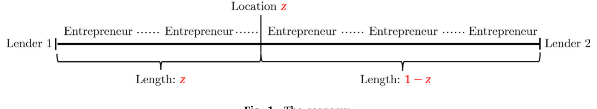
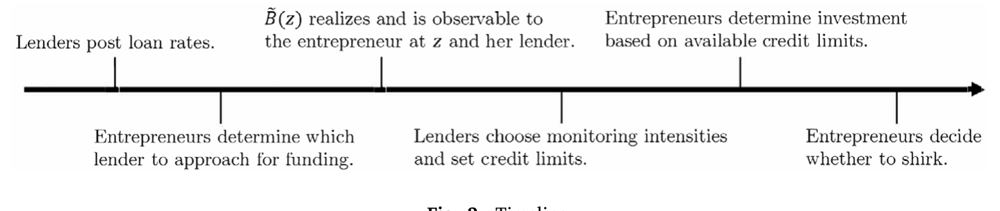
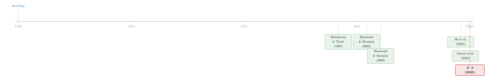

两种技术，两种命运：当「更先进的 IT」未必带来更激烈的竞争
本文读的是 Vives & Ye (2025, Journal of Financial Economics)：把信贷市场建成一条「赫泰林街」，作者证明 IT 进步对竞争和福利的影响，关键取决于它是「整体降本」还是「拉近距离」——前者让贷款人更赚钱、放更多贷且福利单调改善；后者会加剧竞争、压低利率，但对放贷量是驼峰形的，而且当道德风险足够严重时，「太多竞争」反而会拖垮监督、减少投资与福利。价格歧视也并非福利最优。
1 引言：一个我们以为理所当然的故事
银行业正在经历一场数字革命。越来越多的 FinTech 与 BigTech 平台，用算法和自动化挤进了传统放贷生意；老牌银行也在从「砖瓦支行」转向 IT 与大数据。这股浪潮有多猛？据 Berg et al. (2022)，2016—2020 年美国 FinTech 商业贷款的年增速超过 40%；申请融资的中小企业里，向 FinTech 或线上放贷者递交申请的比例，从 2016 年的 19% 涨到了接近三分之一（美联储 2019 年小企业信贷调查）。Fuster et al. (2019) 更测出技术型放贷者处理按揭申请要快 20%，违约风险却没有更高。
面对这股浪潮，几乎人人都会顺手讲出同一个故事：技术更先进 → 竞争更激烈 → 借款人受益、社会福利改善。这个直觉如此自然，以至于很少有人停下来追问：果真如此吗？
Vives 和 Ye 这篇论文，做的恰恰就是停下来追问的工作。它的核心结论可以浓缩成一句反直觉的话：「更先进的 IT」并不是一个单一概念，它至少有两种，而这两种技术会把市场推向截然相反的方向。 更扎心的是，在某些情形下，IT 带来的「更激烈的竞争」非但不改善福利，反而会亲手掐死信贷供给。
（关于「金融科技凭什么挤进信贷、又会不会伤到借款人」，本博客此前评述过一篇互补的实证—理论文章，可参见《监督做得更差，却照样抢走你的客户》。）
要把这个反转讲清楚，得先把信贷市场画成一条街。
2 把信贷市场画成一条「街」
作者借用了 双重经典工具：赫泰林线性城市 (Hotelling, 1929) 和 监督型金融中介 (Holmstrom & Tirole, 1997)。
设想一条长度为 1 的「城市」。城市两端各坐着一家贷款人 (lender)，记作 \(i\in\{1,2\}\)。沿街每一个点上住着一个没有本钱的创业者 (entrepreneur)。这里的「距离」不必是物理距离——它也可以是特征空间里的距离：贷款人在某些行业、某些类型的项目上有专长，离它「近」的创业者，正是它看得懂、管得住的那一类（Paravisini et al. (2023) 关于出口贷款、Duquerroy et al. (2022) 关于中小企业贷款的专业化证据，都是这层含义的现实注脚）。
如果创业者到贷款人 1 的距离是 \(z\)，我们就说他「位于 \(z\)」；于是他到贷款人 2 的距离自然就是 \(1-z\)。

Figure 1: The economy
每个创业者手里有一个可伸缩的风险项目，但没钱，必须向贷款人借。借到 \(I(z)\) 单位资金、且不偷懒时，项目的回报是
$$ \tilde R\big(I(z)\big)= \begin{cases} I(z)\,R & \text{with probability } p,\\[2pt] 0 & \text{with probability } 1-p, \end{cases} \qquad R>0. $$
贷款人的边际融资成本为 \(f\)，并且 \(pR-f>0\)（项目的期望净回报为正，值得做）。
故事的张力来自一个道德风险 (moral hazard) 问题：创业者可以「偷懒」。偷懒会给他带来一份私人收益，但项目必然失败（回报变成 0）。这就引出了贷款人存在的全部理由——监督 (monitoring)。
3 模型：偷懒、监督，与两副「皮肉之痛」
这是全文的引擎，值得一步步拆开。
第一步：偷懒的诱惑是随机的。 创业者偷懒能拿到的单位私人收益 \(\tilde B(z)\) 服从一个二值分布：
$$ \Pr\big(\tilde B(z)=B\big)=k,\qquad \Pr\big(\tilde B(z)=b\big)=1-k,\qquad B>b,\ k\in[0,1]. $$
这里 \(k\) 是一个关键旋钮：\(k\) 越大，碰上「高诱惑」\(B\) 的概率越高，道德风险问题越严重。作者还假设 \(B
第二步：监督，就是给诱惑「打折」。 贷款人 \(i\) 可以监督，把偷懒的私人收益压低 \(m_i(z)\)——这就是它的监督强度 (monitoring intensity)。于是，创业者愿意老实干活，当且仅当下面这条 激励相容 (incentive compatibility, IC) 约束成立：
把它移项，IC 约束就把「需要多少监督」写得明明白白：
$$ m_i(z)\;\ge\; I(z)\,\tilde B(z)\;-\;p\,I(z)\big(R-r_i(z)\big). $$
这一行揭示了整篇论文的第一组张力：利率 \(r_i\) 越高，创业者的皮肉之痛 \(R-r_i\) 越小，偷懒越划算，于是需要的监督就越多。 贷款人想多收利息，却会被自己逼着多花监督成本——天下没有免费的高利率。
第三步：监督是有代价的，而且离得越远越贵。 这正是 IT 进入模型的入口。监督成本函数为
$$ C_i(m_i,z)=c_i\big[\,1-q_i(1-d_i)\,\big]\,m_i^{\,2}, \qquad d_1=z,\quad d_2=1-z, $$
其中 \(d_i\) 是贷款人 \(i\) 到该创业者的距离。两个参数各司其职，作者在「Remark」里点明了它们的性质：
- \(c_i\) 是整体成本水平。当 \(c_1=c_2=c\) 时，改变 \(c\) 不会改变两家贷款人的相对成本优势——它在成本之比里被约掉了：
$$ \frac{C_1(m_1,z)}{C_2(m_2,z)}=\frac{1-q(1-z)}{1-q\,z}\cdot\frac{m_1^{\,2}}{m_2^{\,2}}. $$
- \(q_i\) 是距离摩擦：\(q\) 越大，离得远的创业者监督起来越贵；\(q\to 0\) 时距离彻底失效，谁离谁远近都一个价。
于是作者给出了本文最干净的一刀——把 IT 切成两类：
IT-basic（信息收集/处理技术） 对应「降低 \(c\)」：均匀地把所有人的监督都变便宜，但不改变谁在哪儿更有优势——好比换了更强的电脑、更好的数据处理软件。 IT-distance（距离摩擦削减技术） 对应「降低 \(q\)」：它更显著地降低了「远处」创业者的监督成本——好比视频会议、3G 网络、AI 把物理与专长上的距离抹平了（Jiang et al. (2023) 就发现 3G 网络显著削弱了银行放贷的距离摩擦）。
游戏的时序是这样的：贷款人先同时贴出各自的歧视性利率—额度方案，创业者选一家、\(\tilde B(z)\) 揭晓，贷款人再据此调整可得的最大额度并监督，最后投资、见分晓。

Figure 2: Timeline
4 两种 IT，两种命运
铺垫到这里，反转就要来了。
首先，看单边的技术进步。 如果只有一家贷款人升级 IT——无论哪种——结论都一样且符合直觉：它能收更高的利率、放更多的贷。原因很简单，它的监督更便宜了，相对对手的竞争优势扩大了，自然挺直腰板。这与 Branzoli et al. (2024)、Dadoukis et al. (2021) 的发现一致：IT 采用率更高的银行，贷款增长更快。
接着，一个自然的问题是：如果两家一起进步呢？ 此时没有谁单方面扩大优势，结果就要看 IT 的类型了——这是全文的分水岭。
- 若两家一起改进 IT-basic（同降 \(c\)）：竞争激烈程度纹丝不动（因为相对优势不变），利率不变，但监督变便宜了，于是贷款人更赚钱、放更多贷。皆大欢喜，福利单调改善。
- 若两家一起改进 IT-distance（同降 \(q\)）：距离摩擦被削平，两家的差异化变小了——在赫泰林的世界里，差异化就是市场势力的来源。差异化一小，竞争加剧，两家被迫降息。利率下降对借款人是好事，可贷款人的利润反而下降了，尽管监督本身明明变便宜了。
这就是第一层反直觉：IT-distance 让监督更便宜，却让放贷者更不赚钱。 这也正好对上了 D'Andrea et al. (2021) 的实证——宽带互联网的铺开加剧了银行竞争、压低了贷款价格。
5 驼峰从哪里来：三股力量的拔河
但真正关键的一步，是 IT-distance 对信贷供给的影响——它不是单调的，而是驼峰形 (hump-shaped) 的。作者把它拆成同时作用的三股力量：
- 监督效率↑：监督更便宜，倾向于增加信贷供给。
- 创业者的皮肉之痛↑：竞争压低了利率，\(R-r_i\) 变大，创业者更不舍得偷懒，道德风险被缓解，这也倾向于增加信贷供给。
- 贷款人的皮肉之痛↓：利率被压低，贷款人自己在项目里的「赌注」变小，监督的激励随之削弱——而由于贷款人无法事前承诺监督，激励一弱，它就不愿意供给信贷了，这股力量减少信贷供给。
于是反转出现：当 IT-distance 还不够先进（差异化仍高）时，前两股力量占上风，信贷供给和投资随技术进步而上升；可当 IT-distance 足够先进时，第三股力量——贷款人监督激励的崩塌——开始主导，信贷供给和投资掉头向下。一上一下，画出了那道驼峰。这与 Di Patti & Dell'Ariccia (2004) 发现的「银行竞争与企业创立之间是驼峰关系」严丝合缝。
道德风险越严重（\(k\) 越大），第三股力量越容易占上风。直觉是：道德风险越重，越需要监督，于是「贷款人的监督激励」就越要命——竞争一旦把它的赌注压没了，整条信贷链就断在这里。
相比之下，IT-basic 因为没有差异化效应，只剩下「监督效率↑」这一股力量，于是它对信贷供给的影响是单调向上的。这恰好解释了为什么 Ahnert et al. (2024) 会观察到：IT 密集型银行覆盖更多的美国县，其创业（以年轻企业的岗位创造度量）也更强——那是 IT-basic 的功劳。同一篇论文还发现，IT 采用率更高的银行，其小企业放贷对银行—借款人距离的敏感度更低——那正是 IT-distance 在模型里的指纹。
6 福利与价格歧视：「更多竞争」不是免费的午餐
把上面的逻辑推到福利层面，结论同样不温柔。
当竞争不够激烈时，加一点竞争是好的：它把创业者过低的皮肉之痛抬起来，大幅缓解道德风险。可一旦竞争「太多」，福利反而下降——高强度竞争压垮了贷款人的赌注与监督激励，信贷供给随之萎缩。换句话说，社会福利对竞争强度也是驼峰形的；当竞争已经很激烈时，福利会随竞争强度的提高而下降。这与早期 Hauswald & Marquez (2006) 的结论恰好相反——在他们那里，IT 进步会软化竞争，且福利随竞争强度单调上升。
最后一记重锤落在价格歧视 (price discrimination) 上。作者证明：从社会角度看，福利最优的贷款利率根本不依赖于贷款人的 IT。一个贷款人的 IT 决定了它能把蛋糕做多大，但「怎么切这块蛋糕」要在「道德风险的严重程度」与「监督激励」之间权衡，而这个权衡与 IT 无关。于是放贷者的价格歧视必然带来无效率：它会在远处（自己 IT 优势低的地方）杀价抢生意，在近处（专长所在、IT 优势高的地方）狠狠抬价榨取——这套打法在每个位置上都没把「道德风险」和「监督激励」摆平。
这给监管者留了一道口子：设定一个合理的参考利率、限制价格歧视，反而能改善福利。 这一点与本博客评述过的统一定价研究遥相呼应——价格歧视看似「精准」，未必是社会最优（参见《你以为银行在跟邻居竞争，其实它在全国统一调价》）。
7 文献脉络
把这篇论文放回它的来路，能看得更清楚。
最上游是两条独立的河。一条是空间竞争：Hotelling (1929) 的线性城市，经 Thisse & Vives (1988) 对空间定价策略的提炼，成为产业组织里刻画「差异化—市场势力」的标准语言。另一条是监督型中介：Diamond (1984) 的「受托监督」、Holmstrom & Tirole (1997) 的「皮肉之痛与可贷资金」，奠定了「监督让有道德风险的创业者也能拿到钱」这一微观基础。

两条河第一次正面汇合，是在 Hauswald & Marquez (2003, 2006) 的「信息技术与信贷竞争」里：他们让利率随距离和竞争强度递减，但机制是逆向选择，且 IT 进步软化竞争。本文换了引擎——把机制换成 Holmstrom-Tirole 式的道德风险与监督，并第一次把 IT 切成 basic 与 distance 两类，得出「竞争被加剧或不变、福利可随竞争而下降」这组与前人相反的结论。
紧邻的当代坐标还有两个。He et al. (2023) 研究「开放银行」——借款人把数据从银行分享给 FinTech，会如何改变竞争（关于「数据共享如何反噬借款人」，本博客另有评述，可参见《数据让定价更准，谁的钱包先变薄？》）。而 Ahnert et al. (2024)、D'Andrea et al. (2021)、Di Patti & Dell'Ariccia (2004) 这些实证发现，则像是为本文模型量身定制的「对照表」——这也是这篇纯理论文章最难得的地方：它的每一个比较静态，几乎都能在已有经验证据里找到落点。
8 评论与延伸（Q&A + 研究方向）
(a) 几个可能的疑问
Q：IT-basic 和 IT-distance 的区分，会不会只是「换个参数」的文字游戏？
不是。两者的分界有硬的数学含义：\(c\) 在两家相对成本之比里被约掉，因此不改变差异化；而 \(q\) 直接改变「成本随距离上升的斜率」，因此改变差异化、进而改变竞争强度。整篇论文相反方向的结论，正是从这一处分叉长出来的。
Q：「更多竞争反而减少信贷」是不是模型设定硬凑出来的？
它来自一个真实的承诺难题：贷款人无法事前承诺监督，监督激励来自它自己在项目里的赌注。竞争压低利率 → 贷款人赌注变小 → 它不愿监督 → 在道德风险重的地方，信贷干脆收缩。这条链条是内生的，而非外加假设，且能对上 Di Patti & Dell'Ariccia (2004) 的驼峰证据。
Q：和 Hauswald & Marquez (2006) 到底差在哪？
差在机制与结论双双相反。他们用逆向选择，IT 进步软化竞争、福利随竞争单调上升；本文用道德风险+监督，IT-distance 加剧竞争，福利对竞争是驼峰形的。同一个问题，换一套微观基础，答案就翻面了——这本身就说明「机制选择」在政策结论上有多重。
Q：为什么价格歧视会无效率？精准定价不是更有效吗？
因为福利最优的切蛋糕方式只取决于「道德风险 vs 监督激励」的权衡，与贷款人 IT 无关。可价格歧视让贷款人按自己的 IT 优势定价（远处杀价、近处抬价），这恰恰偏离了那个与 IT 无关的最优权衡。于是一个有约束的「参考利率」反而能改善福利。
Q：传统银行会被 FinTech 完全取代吗？
模型说不会。银行在 IT-basic 上有优势（更懂客户数据、监督效率更高），因此对足够近的创业者总能守住正的市场份额；FinTech 凭 IT-distance 施压，但替代不了银行。若银行还有更便宜的资金（存款），它在服务相似客户时会给出更低的利率和额度。
Q：这套「距离」只指地理吗？
不只。作者明确把距离推广到特征/专长空间：银行在某行业的专长越深，那类企业就离它越「近」。这让模型能直接对话银行专业化的实证（Paravisini et al. 2023；Duquerroy et al. 2022），也让「IT-distance」可以理解为 AI、搜索引擎把专长而不只是地理距离抹平。
(b) 几个可能的研究问题与提案
1. 把「监督承诺难题」搬到公司债市场。 【经济故事】本文的驼峰完全由「贷款人无法承诺监督」驱动。公司债的持有人（共同基金、保险、外资）监督能力天差地别，且持有人结构会随市场流动性变化——竞争加剧是否也会侵蚀债券投资者的「监督激励」，进而在评级边缘企业上收缩信用供给？ 【可行性】中。需要把贷款监督映射到债券契约/持有人监督，数据上可用债券持有人结构（如 eMAXX）+ 发行量/利差，但「监督激励」难直接观测，识别偏弱。
2. 外资放贷者是「IT-distance 改进者」吗？ 【经济故事】外资银行/投资者天然「距离远」（地理+专长+信息）。若 FinTech 与远程技术降低了它们的距离摩擦，本文预言它们会加剧竞争、压低本地利率，但在道德风险重的行业里可能减少供给。 【可行性】中。可用跨境银团贷款（DealScan）+ 各国宽带/移动网络铺设作为 IT-distance 的外生变动，做距离敏感度的双重差分；难点是把「外资进入」与本地竞争冲击分离。
3. 价格歧视上限作为一项自然实验。 【经济故事】本文给出可检验的规范含义：限制价格歧视、设参考利率能改善福利。现实中存在利率上限、统一定价规定（如某些普惠信贷项目）。 【可行性】高。可找一项把「歧视性定价」改为「统一/封顶定价」的政策（PPP 的 1% 统一利率是反面例子），用断点或 DiD 检验利率分散度、放贷量与违约的变化。
4. 道德风险严重度 × IT 类型的交互。 【经济故事】模型最尖锐的预测是：道德风险越重（\(k\) 越大），IT-distance 越可能减少投资。能否在横截面上找到「道德风险代理」（如行业不可抵押性、信息不透明度），检验 IT-distance 冲击的效果是否随之翻负？ 【可行性】中—高。IT-distance 冲击可用宽带/3G；道德风险代理可借鉴现有文献；交互项识别相对干净，是这篇理论最可落地的一条检验。
5. 流动性视角下的「监督赌注」。 【经济故事】把贷款人的「皮肉之痛」理解为它在二级市场上能否变现头寸。市场流动性变好，贷款人更易卖出贷款 → 赌注/监督激励下降——这与本文「竞争压低赌注」是同构的力量。 【可行性】低—中。理论清晰，但要把贷款二级市场流动性外生地动起来很难，识别是主要障碍。
我的判断
这篇论文最漂亮的地方，是用一个极简的赫泰林框架，把「IT 进步」这个被滥用的大词，干净利落地切成 \(c\) 与 \(q\) 两个参数，并由此长出一组相互对立、却各自有经验证据撑腰的结论。它把「更多竞争未必更好」这条老道理，落到了「贷款人监督激励」这个清晰的承诺难题上，并给出了一个有政策含义的命题——限制价格歧视可以改善福利。对一篇纯理论文章而言，能让每个比较静态都对上一条实证发现，已属难得。
我的保留有三点。其一，「无法承诺监督」是全部反转的支点，但现实中关系型银行恰恰以「可信地持续监督」著称，这个假设的强弱直接决定了驼峰的陡峭程度，值得更细的稳健性讨论。其二，模型把资金成本 \(f\) 设为外生、不刻画存款竞争，而 Drechsler et al. (2021) 强调的存款特许权恰恰是银行市场势力的大头——把存款端竞争内生进来，结论可能被改写。其三，IT-basic 与 IT-distance 在现实里往往捆绑出现（大数据与机器学习同时改善二者），纯粹的单类型冲击难找，这让模型最锋利的预测在实证上反而最难干净识别。
我接下来最想看到的，是有人把第 8 节里「道德风险 × IT 类型」那条交互预测，用一次真正外生的距离技术冲击（宽带或 3G 铺设）做出来——如果 IT-distance 的效果真的随道德风险严重度从正翻负，这篇理论就不只是「自洽」，而是「被验证」了。
参考文献
- Ahnert, T., Doerr, S., Pierri, N., Timmer, Y. (2024). Does IT Help? Information Technology in Banking and Entrepreneurship. Working Paper.
- Berg, T., Fuster, A., Puri, M. (2022). Fintech lending. Annual Review of Financial Economics 14, 187–207.
- Branzoli, N., Rainone, E., Supino, I. (2024). The role of banks' technology adoption in credit markets during the pandemic. Journal of Financial Stability, 101230.
- Buchak, G., Matvos, G., Piskorski, T., Seru, A. (2018). Fintech, regulatory arbitrage, and the rise of shadow banks. Journal of Financial Economics 130(3), 453–483.
- D'Andrea, A., Pelosi, M., Sette, E. (2021). Broadband and Bank Intermediation. Working Paper.
- Di Patti, E. B., Dell'Ariccia, G. (2004). Bank competition and firm creation. Journal of Money, Credit and Banking, 225–251.
- Diamond, D. W. (1984). Financial intermediation and delegated monitoring. Review of Economic Studies 51(3), 393–414.
- Fuster, A., Plosser, M., Schnabl, P., Vickery, J. (2019). The role of technology in mortgage lending. Review of Financial Studies 32(5), 1854–1899.
- Hauswald, R., Marquez, R. (2003). Information technology and financial services competition. Review of Financial Studies 16(3), 921–948.
- Hauswald, R., Marquez, R. (2006). Competition and strategic information acquisition in credit markets. Review of Financial Studies 19(3), 967–1000.
- He, Z., Huang, J., Zhou, J. (2023). Open banking: Credit market competition when borrowers own the data. Journal of Financial Economics 147(2), 449–474.
- Holmstrom, B., Tirole, J. (1997). Financial intermediation, loanable funds, and the real sector. Quarterly Journal of Economics 112(3), 663–691.
- Hotelling, H. (1929). Stability in competition. Economic Journal 39(153), 41–57.
- Paravisini, D., Rappoport, V., Schnabl, P. (2023). Specialization in bank lending: Evidence from exporting firms. Journal of Finance 78(4), 2049–2085.
- Thisse, J.-F., Vives, X. (1988). On the strategic choice of spatial price policy. American Economic Review.
- Vives, X., Ye, Z. (2025). Information technology and lender competition. Journal of Financial Economics 163, 103957.